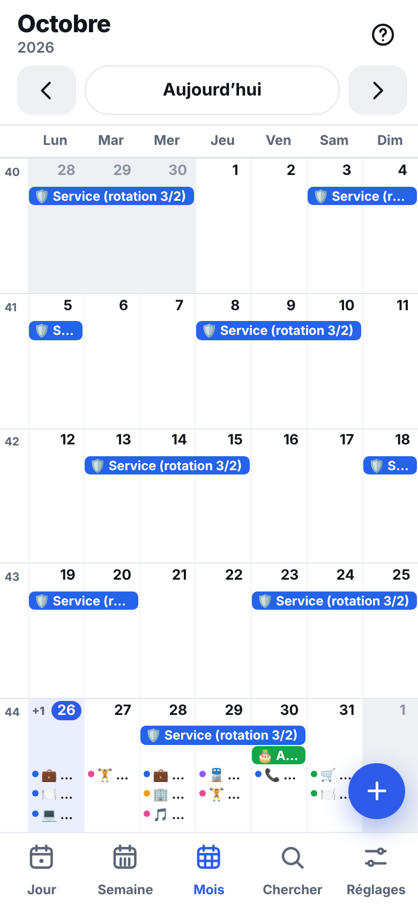
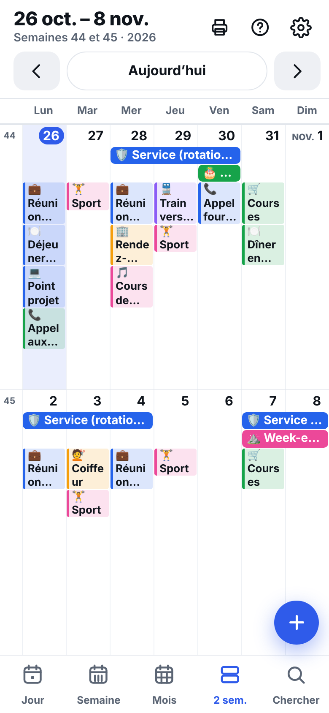
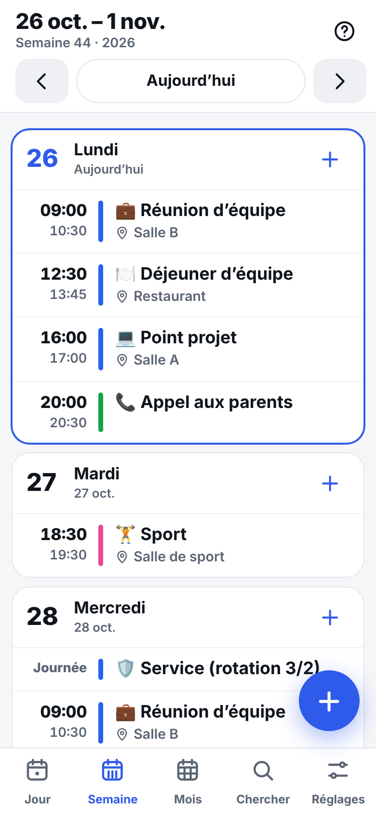
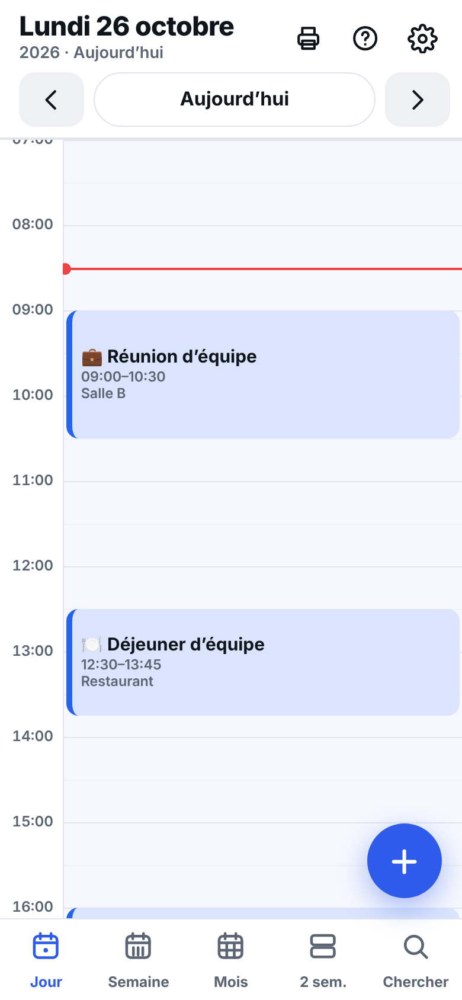
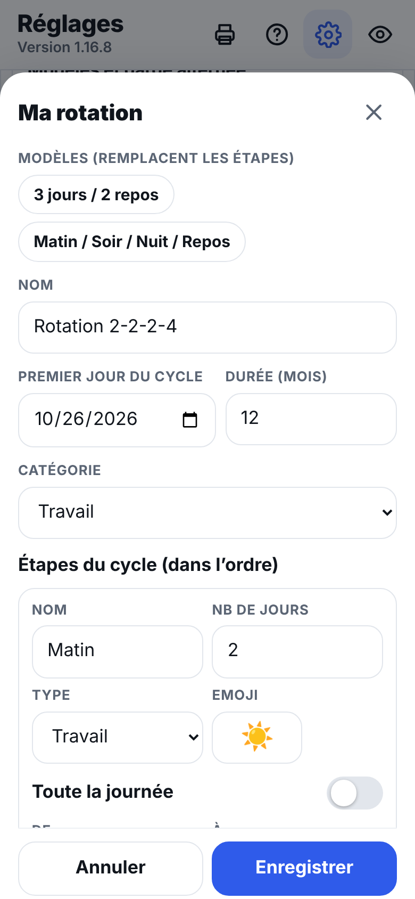
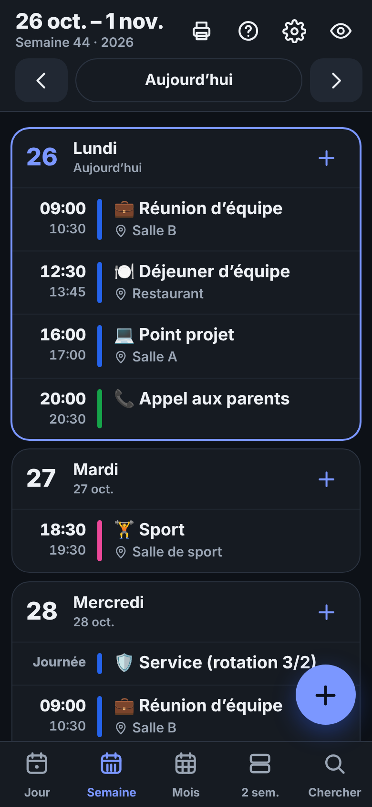
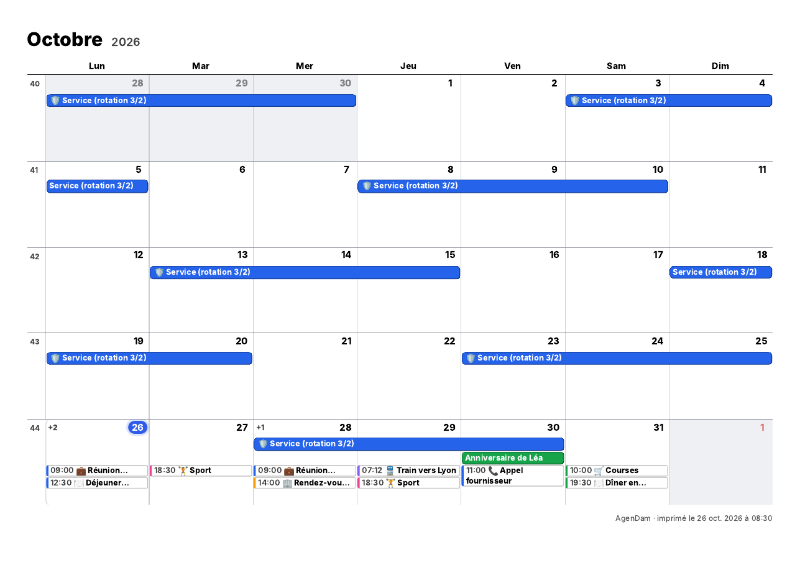

Jour, semaine, 2 semaines et mois en gros caractères. Gratuit, sans publicité, et rien ne quitte ton téléphone.
Ouvrir l’appliVoir la démo





Des vues nettes, en gros caractères, lisibles d’un coup d’œil, sur téléphone, tablette ou ordinateur. La vue « 2 semaines » donne beaucoup de place aux titres.
Les titres sont écrits en entier (sur plusieurs lignes quand il y a de la place), avec une barre de couleur par catégorie. Un événement sur plusieurs jours forme un seul bandeau avec son nom complet.
🦷 dentiste, 🎂 anniversaire, 🏖️ vacances… Un coup d’œil suffit pour repérer ce qu’on fait.
Tu crées toi-même ton cycle : jours travaillés, repos, matin / soir / nuit, heures, emoji. Des modèles (3 jours / 2 repos, 2-2-2-4) pour démarrer. Facultatif.
Tous les jours, semaines, mois, ans. « À venir aujourd’hui » à l’ouverture et notifications quand la plateforme le permet.
Jour, semaine, 2 semaines ou mois : une seule page A4, bien lisible, avec l’heure devant chaque rendez-vous.
Tu choisis ce que tu envoies (par période, catégorie, case à cocher), et ton téléphone te laisse choisir le calendrier : iCloud, Outlook, Google…
Envoi de ton agenda vers un calendrier Outlook à part, directement vers ton compte, sans serveur intermédiaire.
Sauvegarde .json, import et export .ics, recherche en quelques lettres, thème clair, sombre ou automatique.
C’est un envoi, pas une synchronisation : après une modification, l’appli propose « Mettre à jour ».
Sens unique (appli → Outlook). La connexion expire au bout de quelques jours : il faut alors se reconnecter.
Une seule page A4 par impression.

Aucune donnée n’est collectée. Pas de compte, pas de serveur, pas de statistiques, pas de cookies, pas de publicité, aucune bibliothèque ou police chargée depuis un autre site.
Tes événements sont enregistrés uniquement dans le stockage local de ton appareil. Ils ne sont jamais envoyés nulle part. Pour les déplacer, tu crées toi-même un fichier de sauvegarde.
Connexion Outlook (facultative). Si tu l’actives, l’appli envoie tes événements directement vers ton compte Microsoft, sur le site officiel de Microsoft, avec ton accord. Aucun serveur de l’appli n’existe : rien n’est reçu ni conservé par nous. Tu peux te déconnecter et supprimer le calendrier à tout moment.
Pour effacer tes données : Réglages → « Effacer toutes mes données ».
Dans la roue crantée ⚙ → Fiche de l’appli : 3 affiches (claire, sombre, avec l’appli) et une carte d’aperçu, à envoyer avec « Partager avec le descriptif », « Voir la fiche » ou « Copier le lien ». Le Guide d’utilisation et « Installer l’appli » sont au même endroit.